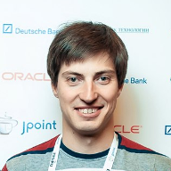

JUG.EKB - cообщество Java разработчиков Екатеринбурга.
JUG - Java User Group, встречи JUG.EKB - это обсуждение различных технологий из мира Java,
обмен
опытом, а также просто интересное общение!
Мы планируем регулярно проводить встречи JUG.EKB с лекциями Java экспертов на самые
интересные темы.
Третья встреча JUG.EKB
Третья встреча JUG.EKB состоится 13 ноября, старт в 19-30 в Коворкинге "Соль" (переулок Химиков, 3, 4 этаж ).
Доклады:

Динамическая (JIT) компиляция в JVM
Владимир Иванов из Oracle
Владимир Иванов — ведущий инженер Oracle, работает в группе разработки виртуальной Java-машины HotSpot. Специализируется на JIT-компиляции и поддержке альтернативных языков на платформе Java. Владимир пришел в Sun Microsystems (приобретена Oracle) в 2005 году и с того момента поучаствовал в большом количестве проектов, связанных с Java (HotSpot JVM, RTSJ, JavaFX).
Java абстрагирует большое количество технических деталей о платформе, на которой исполняется Java-приложение. получить приемлемую скорость исполнения, Java-платформа активно использует динамическую компиляцию в виртуальной Java-машине (JVM). Динамическая (Just-In-Time) компиляция повышает производительность за счет трансляции Java байткода в машинный код в процессе работы приложения. Принцип работы существенно отличается от статических компиляторов и для получения высокопроизводительного кода JVM использует другой набор методик компиляции. В докладе будут описаны общие принципы динамической компиляции и ее особенности в применении к Java. Обзор JIT-компиляторов в HotSpot JVM будет включать рассмотрение инструментов и методик анализа их работы (от высокоуровневых решений и до машинного кода) и диагностирования проблем.
Наскальное программирование
Евгений Пальмов из Naumen
Платформа Java уже давно доказала своё право находиться на лидирующих позициях рынка, зарекомендовав себя как отличную основу для разработки проектов любого калибра. Однако есть ли жизнь после Java? А может быть Scala? В докладе будут рассмотрены основные возможности Scala, от самых основ и до метапрограммирования на макросах, а также как она предлагает с их помощью красиво и просто решать распространенные проблемы в Java, при этом повышая общее качество и скорость написания кода.
???
Lightning talks
Lightning talks — это серия пятиминутных докладов, заявиться на них можно в любое время, хоть за 5 минут до начала. Презентация не обязательна, но желательна. Тема доклада ограничена только тематикой Java, вы можете рассказать о, например, недавно обнаруженном фреймворке или о проблеме, которую вы недавно решили. Lightning talks - это отличный способ попробовать себя в роли докладчика. Поэтому мы ждем от вас заявок на доклад на lightning talks.
Регистрация: